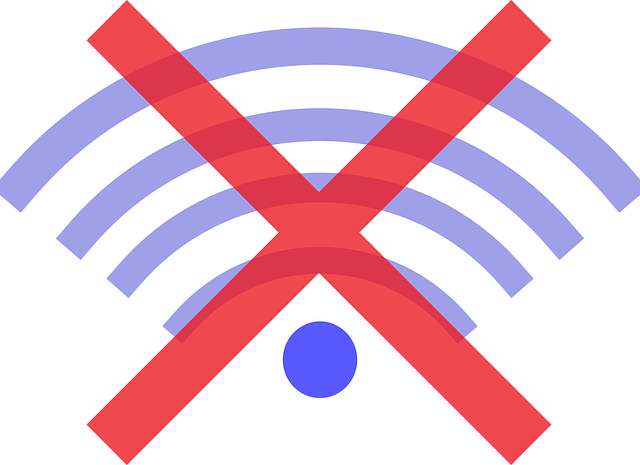

<navbar></navbar>
<router-outlet *ngIf='!offline;else disconnected'></router-outlet>
<ng-template #disconnected>
    <section class="text-center">
        
        <h1 class="text-info">
            Parece que no tienes connexion a internet...
        </h1>
    </section>    
</ng-template>

<app-footer></app-footer>